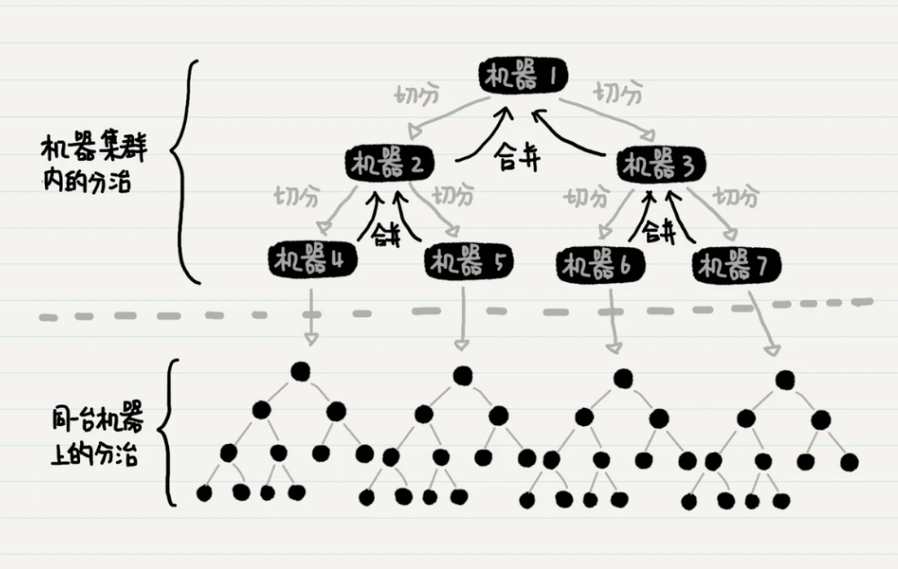
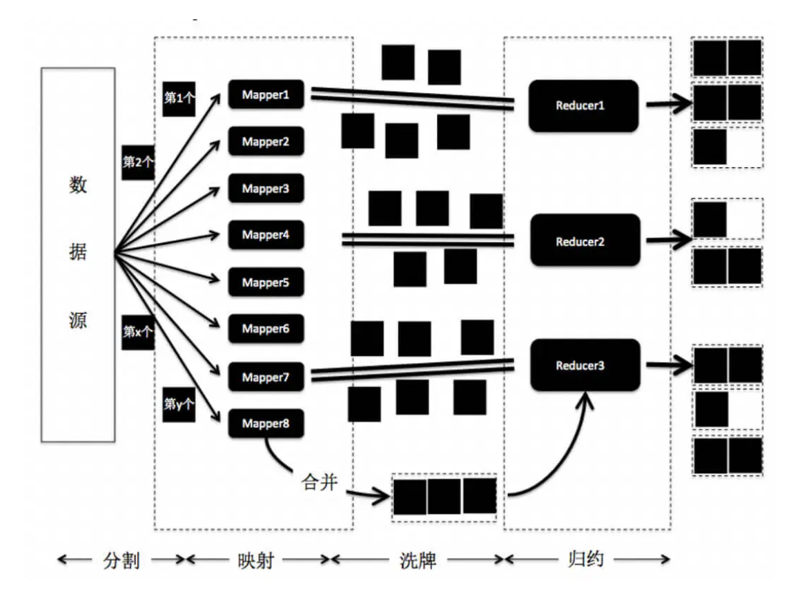

程序员的数学
1 数字0
如何定义\(10^0\)
不要死记其等于1。按规律来，\(10^3, 10^2, 10^1, 10^0\) ，每一个之间差了10倍，所以\(10^0=1\) 。\(10^{-1}\) 的结果同理。
- 这不是 记忆力 的问题，而是 想象力 的问题。目的是 简化规则 。
- \(0!=1\) 同理，简化递归规则 \(n!=n\times (n-1)!\) 即 \(1!=1\times 0!\)
0的作用：占位
用在按位计数法中，表示“没有”
- 现实中经典案例：通过没有药效的药，填满每日的服药例程中；简化了服药规则，病人只需要每天按时吃药就行，无需记服药日期。
历史
- 古埃及人：5进制和10进制混合计数，非按位计数法，不存在0
- 巴比伦人：仅两种符号表示1和10，硬件条件限制(粘土板)，容易刻画。采用10进制和60进制，1小时60分钟即来源于此
- 玛雅人：从0开始数数，20进制
- 罗马人：罗马表示法，5为一个单元
- 印度人：十进制含0，现代计数源头；叫阿拉伯数字，是因为是阿拉伯学者将数字传入西欧。
2 逻辑
命题（proposition）的定义
能够判断对错的陈述句 叫做命题。同时满足true和false的不能称为命题，既不为true也不为false的也不能称为命题。
完整性及排他性
应用检查if语句逻辑
- 数值类型通过在数轴上画清边界值，通过查看有无“重复”或“遗漏”，分别判断排他性或完整性。
- 没有“遗漏”，具备完整性
- 没有“重复”，具备排他性
图表表示
- 真值表
- 文氏图
- 使用卡诺图简化逻辑
undefined
None and TrueisNone
3 计数
集合数量
- \(|A|\) 表示集合A的数量
排列
使用类似条件概率属性图的方式可帮助理解
组合
先排列后去重，分母中的 \(k!\) 即为去重操作
4 递归
通过递推公式求递归解析式全靠猜，需要数感和想象力
找出递归结构
- 从整体问题中隐去部分问题
- 判断剩余部分是否和整体问题是同一类问题
分布式归并排序
 注意点：
- 机器1、2、3都没有被分配排序的工作，只是在子结点的排序完成后进行有序数组的合并
- 另一种可能的数据切分方式是，每台机器拿出一半的数据给另一台机器处理，而自己来完成剩下一半的数据。
MapReduce架构

- 数据分割是指将数据源进行切分，并将分片发送到 Mapper 上。
- 映射是指 Mapper 根据应用的需求，将内容按照 键 - 值 的匹配，存储到哈希结构中。
- 归约是指接受到的一组键值配对，如果是键内容相同的配对，就将它们的值归并。
注意点：
- MapReduce 采用了哈希映射来分配数据，而普通的分治或递归不一定需要。
- 由于哈希映射的关系，MapReduce 还需要洗牌的步骤，也就是将键 - 值的配对不断地发给对应的 Reducer 进行归约。
- 在数据映射和洗牌之间，加入合并的过程，在每个 Mapper 节点上先进行一次 本地的归约 。
5 指数爆炸
对数
对数是解决指数爆炸的有效手段
- 对数的作用之一是可以将乘法运算变为加减法，指数爆炸情况下更容易发现规律
- 对数坐标轴：想象两个点同时乘以1.05倍，这1.05倍在坐标轴上的长度是一样的
涉及指数爆炸的四种处理方法
- 穷举拼性能
- 投机取巧，只需满足问题，变相求解；如哥尼斯堡七桥问题和铺设草席问题
- 求近似解：看需求，实用性强
- 概率求解：随机撞大运
6 解题思路
- 缩小问题规模(建议数字3和5)